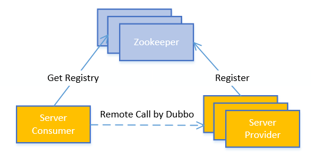
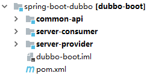
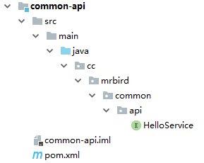
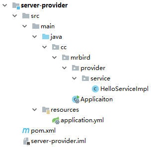
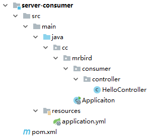
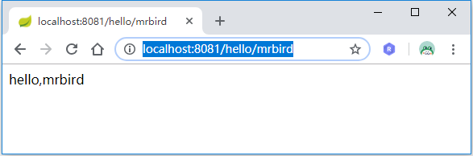

Dubbo是一款由阿里巴巴开发的远程服务调用框架（RPC），其可以透明化的调用远程服务，就像调用本地服务一样简单。截至目前，Dubbo发布了基于Spring Boot构建的版本，版本号为0.2.0，这使得其与Spring Boot项目整合变得更为简单方便。而Zookeeper在这里充当的是服务注册中心的角色，我们将各个微服务提供的服务通过Dubbo注册到Zookeeper中，然后服务消费者通过Dubbo从Zookeeper中获取相应服务并消费。本文案例的架构图可以简单用下图表示： 
本文案例最终项目结构如下图所示：

项目采用Maven构建，各模块的作用：
| 模块 | 描述 |
|---|---|
| common-api | 统一定义接口，供其余子模块引用 |
| server-provider | 服务提供者，实现common-api模块中的接口，然后暴露到Zookeeper中，供服务消费者使用 |
| server-consumer | 服务消费者，通过Dubbo从Zookeeper中获取服务并消费 |
环境准备
Zookeeper安装
在搭建项目之前需要启动Zookeeper服务，Zookeeper下载地址：http://zookeeper.apache.org/releases.html#download。
下载后解压，将config目录下的zoo_sample.cfg重命名为zoo.cfg(Zookeeper配置文件，默认端口为2181，可根据实际进行修改)。然后双击bin目录下的zkServer.cmd启动即可。
构建父模块
新建一个Maven项目，groupId为cc.mrbird，artifactId为dubbo-boot，packaging指定为pom。然后引入Spring Boot，dubbo-spring-boot-starter和Zookeeper相关依赖：
1 |
|
构建Common-api
新建一个Maven模块，artifactId为common-api，目录结构如下所示：

pom.xml：
1 |
|
项目只包含一个HelloService接口：
1 | package cc.mrbird.common.api; |
至此我们可以开始构建服务提供者和服务消费者了。
构建Server-Provider
新建一个Maven模块，用于暴露Dubbo服务，artifactId为server-provider，目录结构如下所示：

pom内容如下：
1 |
|
这里我们引入了common-api模块，用于后续实现相应的服务。
在Spring Boot启动类中我们加入@EnableDubbo注解，表示要开启dubbo功能:
1 | import com.alibaba.dubbo.config.spring.context.annotation.EnableDubbo; |
接着在applicaiton.yml中配置Dubbo：
1 | server: |
如果Zookeeper是集群的话，spring.dubbo.registry.address配置为：
1 | spring: |
接下来我们在cc.mrbird.provider.service路径下创建一个HelloService接口的实现类：
1 | import cc.mrbird.common.api.HelloService; |
值得注意的是@Service注解为Dubbo提供的com.alibaba.dubbo.config.annotation.Service，而非Spring的那个。其中interfaceClass是指要发布服务的接口。
通过上面的配置，我们已经将HelloService接口的实现暴露到Zookeeper中了，接下来我们继续创建一个服务消费者，来消费这个服务。
搭建Server-Consumer
新建一个Maven模块，用于消费Dubbo服务，artifactId为server-consumer，目录结构如下所示：

pom内容如下：
1 |
|
同样的，我们也在Spring Boot启动类中我们加入@EnableDubbo注解，表示要开启dubbo功能。
接着在applicaiton.yml中配置Dubbo：
1 | server: |
同服务提供者，我们需要指定Zookeeper的地址，协议为dubbo。
接着我们定义一个TestController，演示服务消费：
1 | import cc.mrbird.common.api.HelloService; |
通过Dubbo的@Reference注解注入需要使用的interface，类似于Spring的@Autowired。
测试
分别启动Server-Provider和Server-Consumer，访问http://localhost:8081/hello/mrbird：

说明远程服务调用已经成功。
这里只是通过Spring Boot和Dubbo的整合来简单了解Dubbo的使用，仅作抛砖引玉，更为详细的Dubbo配置可以查看官方文档：http://dubbo.apache.org/zh-cn/docs/user/quick-start.html
源码链接：https://github.com/wuyouzhuguli/SpringAll/tree/master/40.Spring-Boot-Dubbo-Zookeeper